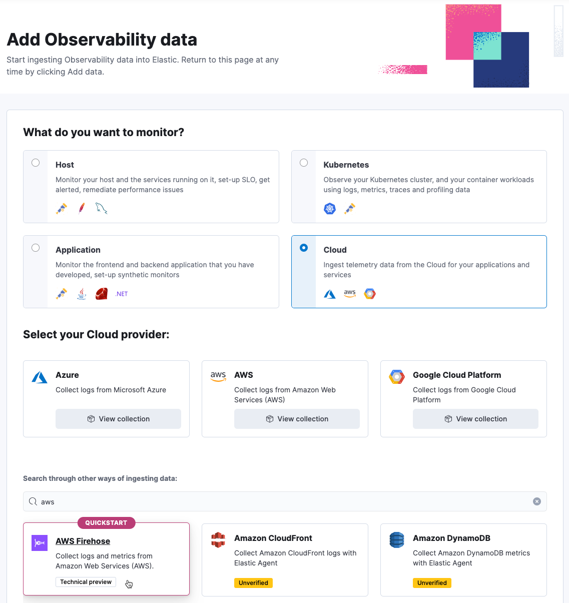

Quickstart: Collect data with AWS Firehose
editIn this quickstart guide, you’ll learn how to use AWS Firehose to send logs and metrics to Elastic.
The AWS Firehose streams are created using a CloudFormation template, which can collect all available CloudWatch logs and metrics for your AWS account.
This approach requires minimal configuration as the CloudFormation template creates a Firehose stream, enables CloudWatch metrics collection across all namespaces, and sets up an account-level subscription filter for CloudWatch log groups to send logs to Elastic via Firehose. You can use an AWS CLI command or upload the template to the AWS CloudFormation portal to customize the following parameter values:
Required Input Parameters
-
ElasticEndpointURL: Elastic endpoint URL. -
ElasticAPIKey: Elastic API Key.
Optional Input Parameters
-
HttpBufferInterval: The Kinesis Firehose HTTP buffer interval, in seconds. Default is60. -
HttpBufferSize: The Kinesis Firehose HTTP buffer size, in MiB. Default is1. -
S3BackupMode: Source record backup in Amazon S3, failed data only or all data. Default isFailedDataOnly. -
S3BufferInterval: The Kinesis Firehose S3 buffer interval, in seconds. Default is300. -
S3BufferSize: The Kinesis Firehose S3 buffer size, in MiB. Default is5. -
S3BackupBucketARN: By default, an S3 bucket for backup will be created. You can override this behaviour by providing an ARN of an existing S3 bucket that ensures the data can be recovered if record processing transformation does not produce the desired results. -
Attributes: List of attribute name-value pairs for HTTP endpoint separated by commas. For example "name1=value1,name2=value2".
Optional Input Parameters Specific for Metrics
-
EnableCloudWatchMetrics: Enable CloudWatch Metrics collection. Default istrue. When CloudWatch metrics collection is enabled, by default a metric stream will be created with metrics from all namespaces. -
FirehoseStreamNameForMetrics: Name for Amazon Data Firehose Stream for collecting CloudWatch metrics. Default iselastic-firehose-metrics. -
IncludeOrExclude: Select the metrics you want to stream. You can include or exclude specific namespaces and metrics. If no filter namespace is given, then default to all namespaces. Default isInclude. -
MetricNameFilters: Comma-delimited list of namespace-metric names pairs to use for filtering metrics from the stream. If no metric name filter is given, then default to all namespaces and all metrics. For example "AWS/EC2:CPUUtilization|NetworkIn|NetworkOut,AWS/RDS,AWS/S3:AllRequests". -
IncludeLinkedAccountsMetrics: If you are creating a metric stream in a monitoring account, specifytrueto include metrics from source accounts that are linked to this monitoring account, in the metric stream. Default isfalse. -
Tags: Comma-delimited list of tags to apply to the metric stream. For example "org:eng,project:firehose".
Optional Input Parameters Specific for Logs
-
EnableCloudWatchLogs: Enable CloudWatch Logs collection. Default istrue. When CloudWatch logs collection is enabled, an account-level subscription filter policy is created for all CloudWatch log groups (except the log groups created for Firehose logs). -
FirehoseStreamNameForLogs: Name for Amazon Data Firehose Stream for collecting CloudWatch logs. Default iselastic-firehose-logs.
Some AWS services need additional manual configuration to properly ingest logs and metrics. For more information, check the AWS integration documentation.
Data collection with AWS Firehose is supported on Amazon Web Services.
Prerequisites
edit- An Elastic Observability Serverless project. To learn more, refer to Create an Observability project.
- A user with the Admin role or higher—required to onboard system logs and metrics. To learn more, refer to Assign user roles and privileges.
- An active AWS account and the necessary permissions to create delivery streams.
The default CloudFormation stack is created in the AWS region selected for the user’s account. This region can be modified either through the AWS Console interface or by specifying a --region parameter in the AWS CLI command when creating the stack.
Limitations
editThe AWS Firehose receiver has the following limitations:
- It does not support AWS PrivateLink.
- The CloudFormation template detects and ingests logs and metrics within a single AWS region only.
The following table shows the type of data ingested by the supported AWS services:
| AWS Service | Data type |
|---|---|
VPC Flow Logs |
Logs |
API Gateway |
Logs, Metrics |
CloudTrail |
Logs |
Network Firewall |
Logs, Metrics |
Route53 |
Logs |
WAF |
Logs |
DynamoDB |
Metrics |
EBS |
Metrics |
EC2 |
Metrics |
ECS |
Metrics |
ELB |
Metrics |
EMR |
Metrics |
MSK |
Metrics |
Kinesis Data Stream |
Metrics |
Lambda |
Metrics |
NAT Gateway |
Metrics |
RDS |
Metrics |
S3 |
Metrics |
SNS |
Metrics |
SQS |
Metrics |
Transit Gateway |
Metrics |
AWS Usage |
Metrics |
VPN |
Metrics |
Uncategorized Firehose Logs |
Logs |
Collect your data
edit- Create a new Elastic Observability Serverless project, or open an existing one.
- In your Elastic Observability Serverless project, go to Add Data.
-
Go to Cloud > AWS, and then select AWS Firehose.
 - Click Create Firehose Stream in AWS to create a CloudFormation stack from the CloudFormation template.
- Go back to the Add Observability Data page.
Visualize your data
editAfter installation is complete and all relevant data is flowing into Elastic, the Visualize your data section allows you to access the different dashboards for the various services.
Here is an example of the VPC Flow logs dashboard:
Refer to Observability overview for a description of other useful features.